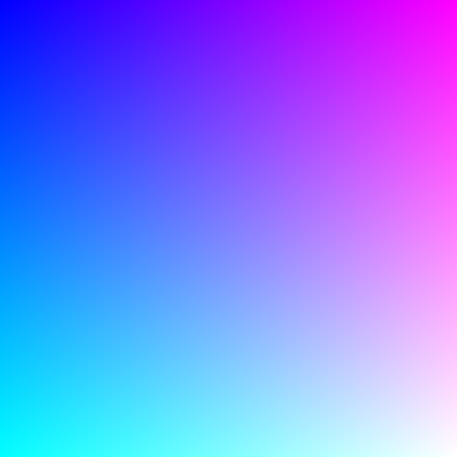

着色器入门
着色器是在图形处理单元（GPU）上运行的特殊程序，可以完成一些令人难以置信的任务。 它们利用 GPU 一次处理多个像素，使其快速且特别适用于某些任务，例如生成噪声、应用模糊滤镜或对多边形进行着色。 一开始学习着色器编程可能会让人望而却步，需要与 p5.js 的二维绘图不同的思路。本文档将概述着色器编程的基础知识，并指向其他资源。
目录
设置
p5.js 是处理着色器的好工具，因为它处理了大部分 WebGL 的设置，使您可以专注于着色器代码本身。在开始使用着色器之前，我们必须设置画布，使其使用 p5.js WebGL 模型。
...
function setup() {
createCanvas(windowWidth, windowHeight, WEBGL);
}
..
着色器程序由两部分组成，一个顶点着色器和一个片元着色器。 顶点着色器影响 3D 几何图形在屏幕上的绘制位置，片元着色器则负责影响颜色输出。这两个部分分别存储在不同的文件中，并通过 loadShader() 加载到 p5.js 中。一旦着色器被加载，它就可以在 draw() 中使用。下面的示例将展示如何在 p5.js 中设置基本着色器：
let myShader;
function preload() {
// load each shader file (don't worry, we will come back to these!)
myShader = loadShader('shader.vert', 'shader.frag');
}
function setup() {
// the canvas has to be created with WEBGL mode
createCanvas(windowWidth, windowHeight, WEBGL);
describe('a simple shader example that outputs the color red')
}
function draw() {
// shader() sets the active shader, which will be applied to what is drawn next
shader(myShader);
// apply the shader to a rectangle taking up the full canvas
rect(0,0,width,height);
}
着色语言 (GLSL)
现在你可能想知道我们实际上在这些着色器文件中写了什么！着色器文件是用图形库着色语言 (GLSL) 编写的，它具有非常不同的语法和结构，与我们熟悉的语法和结构有很大不同。GLSL 具有类似 C 的语法，这意味着它具有一些 JavaScript 中不存在的概念。
首先，着色语言在类型方面要严格得多。每个你创建的变量都必须用存储的数据类型进行标记。以下是一些常见类型的列表：
vec2(x,y) // 由两个浮点数组成的向量
vec3(r,g,b) // 由三个浮点数组成的向量
vec4(r,g,b,a) // 由四个浮点数组成的向量
float // 带小数点的数字
int // 不带小数点的整数
sampler2D // 对纹理的引用
通常情况下，着色语言比 JavaScript 更加严格。例如，缺少分号将导致错误信息。 不能在不同类型的数字之间进行交换，如浮点数或整数。
首先，让我们看一个基本的顶点着色器：
attribute vec3 aPosition;
void main() {
vec4 positionVec4 = vec4(aPosition, 1.0);
positionVec4.xy = positionVec4.xy * 2.0 - 1.0;
gl_Position = positionVec4;
}
这个顶点着色器以一个 attribute 开始，p5.js 使用它来与着色器共享顶点位置信息。这个 attribute 是一个 vec3，意味着它包含一个 x、y 和 z 值。 Attributes 是特殊的变量类型，只在顶点着色器中使用，并且通常由 p5.js 提供。
所有顶点着色器都需要一个函数 main()，在其中我们定位我们的顶点。 在这个例子中，顶点着色器重新定位我们的顶点，使着色器输出占据整个画布。在 main() 的末尾，我们必须给 gl_Position 赋值。
如果这还不是很清楚，也不要担心。顶点着色器起着重要的作用， 但通常只负责确保我们在片段着色器中创建的内容在几何体上正确地显示。 在许多项目中，您可能会发现自己反复使用相同的顶点着色器。 另一方面，片段着色器负责着色器的颜色输出，是我们进行大量着色器编程的地方。 以下是一个非常简单的片段着色器，它只会显示红色：
precision mediump float;
void main() {
vec4 myColor = vec4(1.0, 0.0, 0.0, 1.0);
gl_FragColor = myColor;
}
片段着色器以指定 float 'precision' 开始。你可以选择低精度 lowp、中精度 mediump 或高精度 highp， 不过在某些情况下，你可能会选择使用中精度或高精度。
precision mediump float;
和顶点着色器类似，片段着色器也需要一个 main() 函数， 但我们不会设置 gl_Position， 而是将颜色分配给 gl_FragColor。
...
vec4 myColor = vec4(1.0, 0.0, 0.0, 1.0);
gl_FragColor = myColor;
...
变量 myColor 被定义为一个 vec4， 这意味着它可以存储 4 个值。由于我们处理的是颜色，因此这四个值分别是红、绿、蓝和 alpha。 着色器不使用像我们的草图一样的 0-255 颜色，而是使用介于 0.0 和 1.0 之间的值。
现在我们已经有了一个顶点着色器和一个片段着色器， 可以将它们保存到单独的文件中（shader.vert 和 shader.frag）， 并使用 loadShader() 加载到我们的草图中。
Uniforms：从草图传递数据到着色器
单独使用这样一个简单的着色器是有用的，但有时需要从 p5.js 草图向着色器传递变量。 这就是 uniforms 的作用。Uniforms 是特殊的变量，可以从草图发送到着色器。 这使得能够更好地控制着色器。例如，您可以使用 p5.js 方法 millis() 向我们的草图传递一个 “时间” uniform，以引入运动。在着色器中，uniforms 在文件顶部定义， 在 main() 之外。在下面的片段着色器中， 我们创建了一个颜色 uniform myColor，这将允许我们从草图中更改颜色。
precision mediump float;
uniform vec3 myColor;
void main() {
// the color we have passed in as a uniform is assigned to the pixel
gl_FragColor = vec4(myColor, 1.0);
}
回到我们的 p5.js 草图，现在可以使用 setUniform() 发送这个颜色：
...
function draw() {
shader(myShader);
// setUniform can then be used to pass data to our shader variable, myColor
myShader.setUniform('myColor', [1.0,0.0,0.0]); // send red as a uniform
// apply the shader to a rectangle taking up the full canvas
rect(0,0,width,height);
}
...
还有 attributes，通常用于在草图和顶点着色器之间共享关于几何体的某些数据，和 varying 变量，它们在顶点着色器和片段着色器之间共享数据。这使得可以在我们的片段着色器中使用位置或其他几何数据。
// (thank you to Adam Ferriss for the foundation of these example shaders)
// position information that is used with gl_Position
attribute vec3 aPosition;
// texture coordinates
attribute vec2 aTexCoord;
// the varying variable will pass the texture coordinate to our fragment shader
varying vec2 vTexCoord;
void main() {
// assign attribute to varying, so it can be used in the fragment
vTexCoord = aTexCoord;
vec4 positionVec4 = vec4(aPosition, 1.0);
positionVec4.xy = positionVec4.xy * 2.0 - 1.0;
gl_Position = positionVec4;
}
现在，将纹理坐标属性分配给变量之后，我们可以在片段着色器中使用纹理坐标。下面的示例结果是蓝色和紫红色的纹理坐标可视化。
precision mediump float;
varying vec2 vTexCoord;
void main() {
// now because of the varying vTexCoord, we can access the current texture coordinate
vec2 uv = vTexCoord;
// and now these coordinates are assigned to the color output of the shader
gl_FragColor = vec4(uv,1.0,1.0);
}

p5.js 为我们处理了许多属性和 uniforms，您可以查看 p5.js 发送到着色器的所有属性列表。